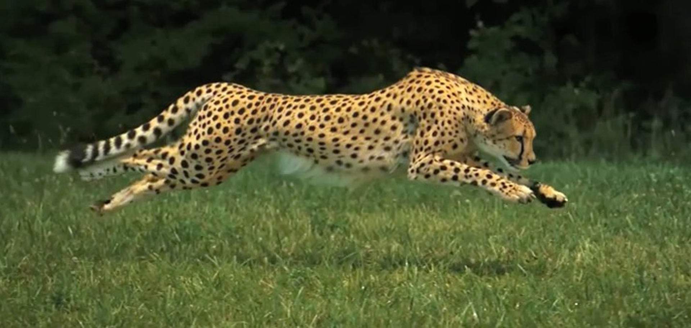
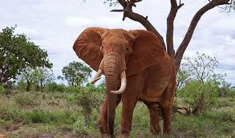
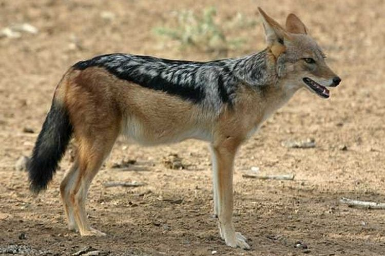
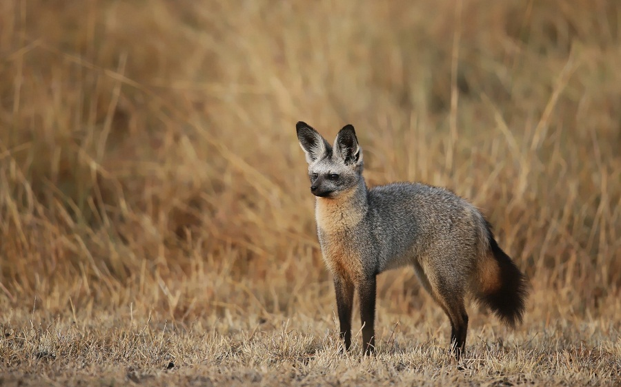
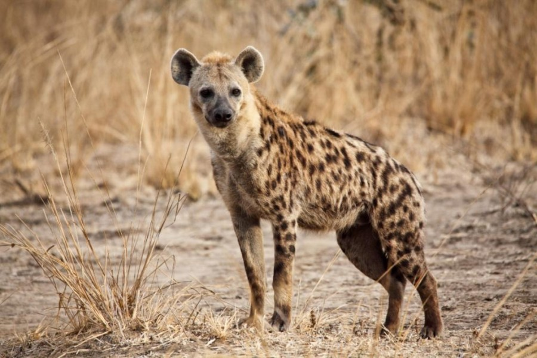

Meet the Animals and scroll down to see the others
Cheetah
The fastest land animal, capable of reaching speeds up to 75 mph. they have a slender, light weight build which contribute to their speed. rimarily inhabit in open grassland and savannah. they are diurnal hunters and rely on their speed to chase down a prey.
African Savannah Elephant
The largest land mammal, known for its intelligence and strong social bonds. and their young live in family group led by matriach. found in sub saharan africa inhabiting variety of environments,including savannah grassland.
Black-backed Jackal
A highly adaptable scavenger and predator found in the African savannah. Omnivorous and opportunistic—feeds on small mammals, birds, reptiles, insects, fruits, and carrion Known for scavenging around predator kills, but also skilled hunters Often hunts alone or in pairs, sometimes cooperatively when targeting larger prey.Mostly nocturnal in hot regions, but can be diurnal (day-active) in cooler areas Live in pairs or small family groups, defend territories with scent marking and vocalizations.
Bat-eared Fox
A small fox with large ears, specialized for detecting insects underground. These large ears help with excellent hearing and thermoregulation. its an insectivorous! Unlike most foxes, the Bat-eared Fox eats primarily insects, especially:Termites and Beetles.
Dik-dik
.jpeg)
A tiny antelope known for its rapid movements and ability to avoid predators. Prefer leaves, shoots, fruits, and flowers Get most of their water from food, rarely drink standing water—adapted to dry conditions. Despite their small size, dik-diks play a crucial role in ecosystems by trimming vegetation and serving as prey for many carnivores.
Hyena
A powerful scavenger with a strong bite and complex social behavior. canivorous Scavengers & Hunters.there are foour species of hyena: potted Hyena (Crocuta crocuta) — Most famous & largest Striped Hyena (Hyaena hyaena) Brown Hyena (Parahyaena brunnea) Aardwolf (Proteles cristata) but Spotted Hyenas are also excellent hunters, catching up to 70% of their food Hunt wildebeest, zebra, antelope, small mammals and Can crush bones with their powerful jaws—digest calcium and marrow easily.Aardwolves specialize in termites.
White-bellied Go-away Bird
.jpeg)
A bird famous for its distinctive call that sounds like "go away. they Mostly eat fruits, berries, buds, and flowers. and occasionally eats leaves and insects. The White-bellied Go-away Bird is not as colorful as other members of the Turaco family, which are known for their bright green and blue feathers. However, its unique call and elegant look make it.
Desert Warthog
.jpeg)
A tough wild pig with curved tusks, thriving in harsh environments. Can survive in dry, arid environments with little water they Dig burrows to escape extreme heat.they Feed on roots, tubers, grasses, and fruits, sometimes even they eat bark or carrion when food is scarce. Good at conserving water—rarely drink if they can get moisture from food.